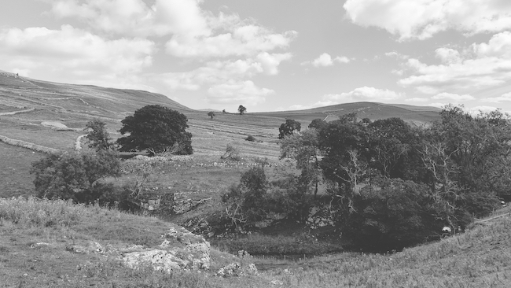
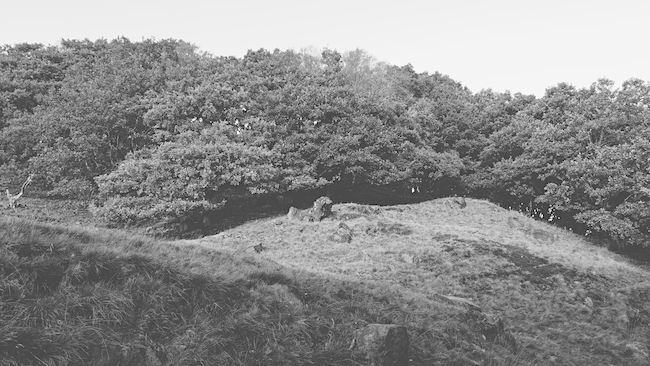

eb01: the land compilation
a community compilation of soundscapes/ambient/noise/drone from merveilles town members and friends, and the first elmet brae project.
download once, listen locally. streaming music is not sustainable.
Download as FLAC on itch.io
Beldam Records Bandcamp Mirror
the land, part 1

Photo is landscape near Malham Cove, August 2022
01 major sunrise (prologue): takumar
00:30
"These drone pieces (
see also track 14 in Part 2) are the first results of a little experiment in permacomputing-inspired software synthesis. I have written short (~100 LOC) programs in C which rely only on the standard library and simply write raw audio data to stdout. To listen, you can pipe them to tools like aplay or pacat on Linux or aucat on BSD, or you can redirect them to a file to save the output. The audio samples are generated on the fly using small lookup tables of sine values, so very little memory is used and these programs should run fine on quite old machines. The drones themselves are basically just a small number of sine waves, with their pitch or amplitude modulated by slow sinusoidal LFOs, so they variously harmonise with or beat against one another. I chose LFO frequencies which are relatively prime to one another so it takes a long time for the combination to loop - they do loop, but personally I can listen for an hour without getting bored, easily."
02 feed: bad diode
02:47
"my track was created by live merging two different nature
samples in an Octatrack and creating feedback and shimmering effects
through several layers of live resampling. A heavily distorted
electrical guitar and some vocal samples were added using the same
process, playing with feedback and live modulation and everything was
bathed in a dense fog of reverb."
badd10de.dev
03 brume: metasyn
05:00
"this recording was made entirely with analog synthesisers, and is almost entirely generative, with only a small few sections played live during recording. the generative part comes from multiple LFOs, noise generators, and overlapping polyrhythmic sequencers."
metasyn.pw
08 pomeriggio umido: nonmateria.com
04:05
"Ambience was recorded in an evening in Villa delle Rose (Bologna). The field recording was filtered from the folderkit sampler used together with orca, track recorded in one take with jack_capture."
nonmateria.com
10 river flowing: tttooooni
02:29
"Ambient + Field Recording track with sounds from around Ukraine. The walking on crunchy leaves was was recorded in Kyiv. The river, cricket sounds are from the Carpathian mountains, in Western Ukraine."
tttooooni.com
13 the wind cannot be changed, but we can adjust our sails: musicamatica
02:04
"Experimented with
Beepbox, exported & processed it in Audacity. Browsed through videos at Openbeelden.nl & stumbled upon almost hundred year (1924) old sailing footage shot in The Netherlands. Combined it. The title is based on a Dutch saying. I had never heard it before, seems apt for current times though.".
Accompanying video.
14 fells: tehn
01:56
"half asleep melodies from forgotten tapes, familiar wind, unfamiliar birdfolk while visiting their volcano"
nnnnnnnn.co
the land, part 2

Photo is Knotts Wood, Todmorden, October 2023
02 from below: zuggamasta
04:41
"When Orllewin created a call¹ for ambient and noise music from the Merveilles Community, I knew that I wanted to join. Very excited, I started experimenting with noise, recordings and feedback again. Remembering that I had multiple iPhone field recordings from 2018 to 2022 that had not been unearthed before, things got interesting. The one recording that struck me the most was from 2021, an innocent recording of rain dripping through our flat’s balcony. If only I knew back then that this serious amount of rain days after a long drought would push from below the ground into our own basement. Would capture my partner in a 4 hour traffic jam. Erode the landscape so much that a whole neighborhood would be rendered uninhabitable and cost people their lives."
zuggamasta.de: Field Recordings on Modular, 2023
03 paying the piper: caffeine's heir
01:11
"I used digital field records from a stroll into the woods near Portland, Oregon, as the basis, recorded in tape, and then used a script to jump around multiple points of them. From there, I added layers using my trusty MIDI keyboard and organic synths to create an earthy and comfy interlude."
caffeine.wiki |
caffeinesheir.bandcamp.com
04 bog sacrifice for all oil execs: ritual dust
04:45
"Climate rage and field recordings taken in the Carrickynaghtan Bog were the main ingredients used in the crafting of this track. They were then fused and charged through feedback loops, layers of distorted drums and the alchemical transformation process of the Strega"
ritualdust.com
06 twilight in the mushroom forest: patchlore
03:29
"The forest heard in this track was entirely synthesized. First, each sound component in the forest was rendered individually as stems. Then, the stems were mixed together and processed with a forest impulse response via convolution. The musical ambience was sampled from "Day 20" in my Sound Mantra series for Looptober 2023, processed through the PaulStretch algorithm."
pbat.ch
09 memory leak: slash
02:33
"Recording notes: Main instruments: K1m + M303. Sequencer: Tidal Cycles + SuperDirt Voltage."
11 mousse et aquilon: garvalf
03:56
"Artist extras: made from an Orca loop, Zynaddsubfx synths, processed with Audacity and Ardour."
12 kalama kon: lectronice
04:55
"An image of windy trees came to my mind. Then this track simply happened. It flowed effortlessly out of a few knob twists, as if it has always been here, waiting to be released. I expected the Land to be harder to reach, but it came to me instead.
("kalama kon" means something like "sound of breath/spirit" in Toki Pona)"
now.lectronice.com
14 major sunrise: takumar
02:29
See info for track 1 in part 1
Credits: mastering by Bad Diode | Original Elmet Brae logo and The Land album artwork by Rostiger - huge thanks to both.